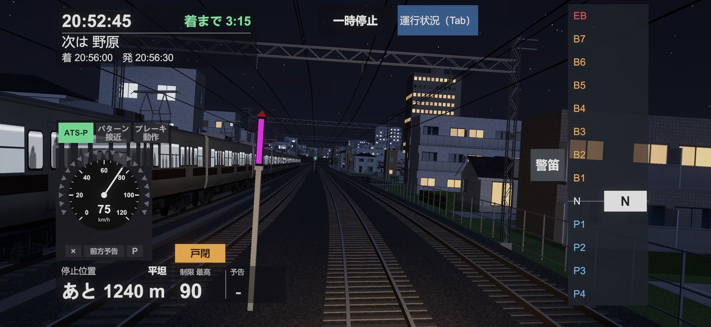
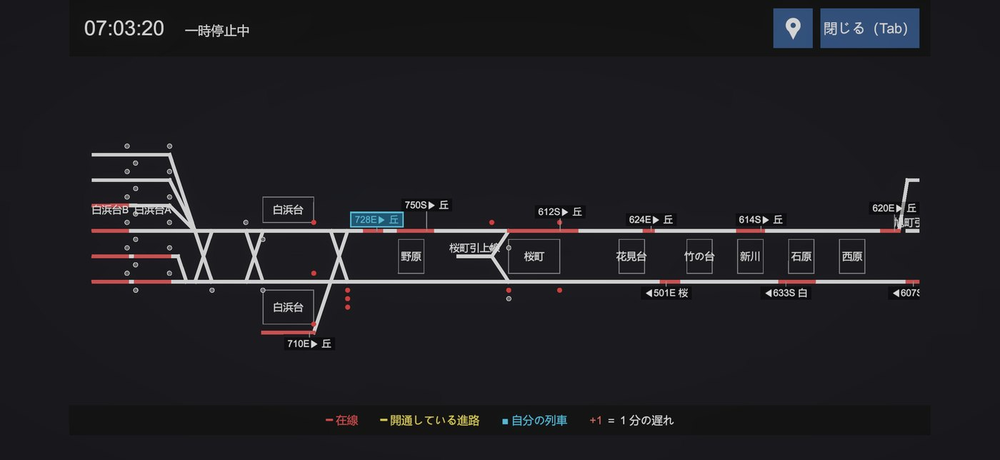
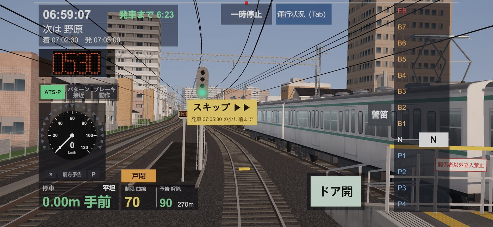
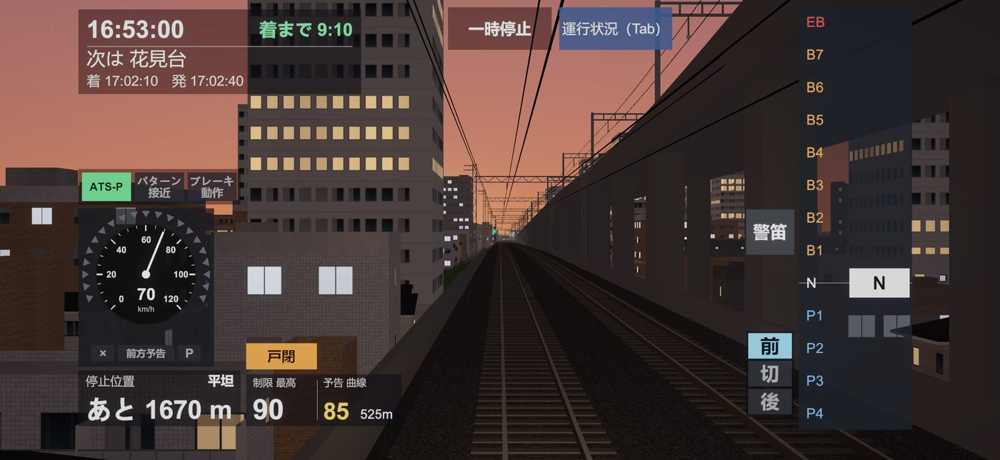
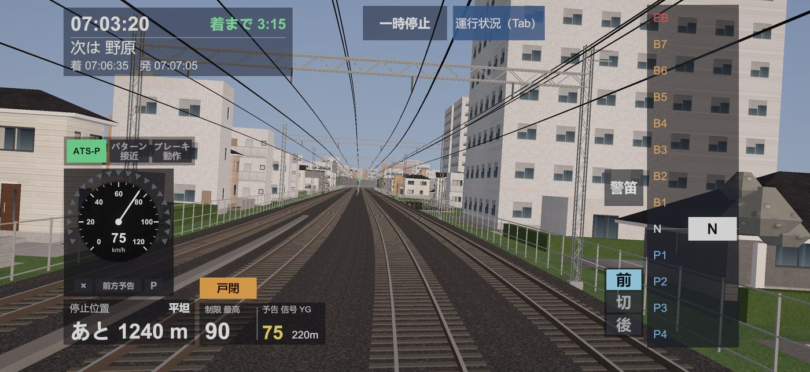
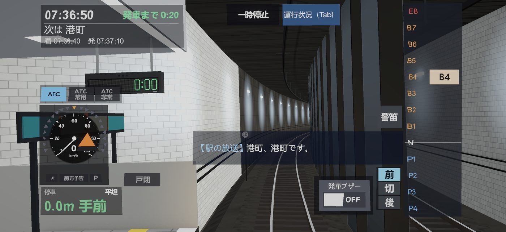
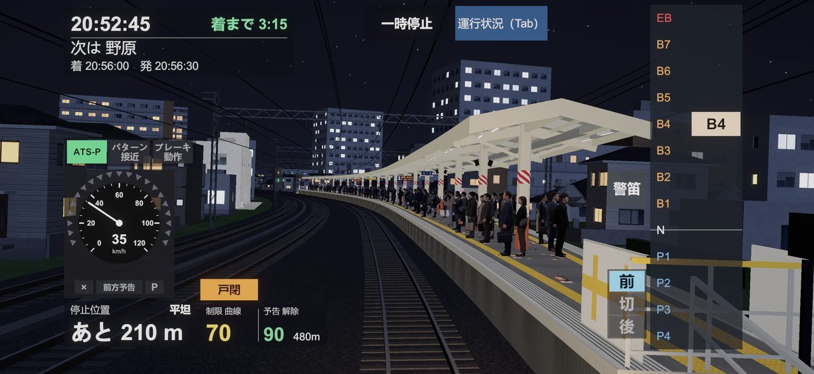
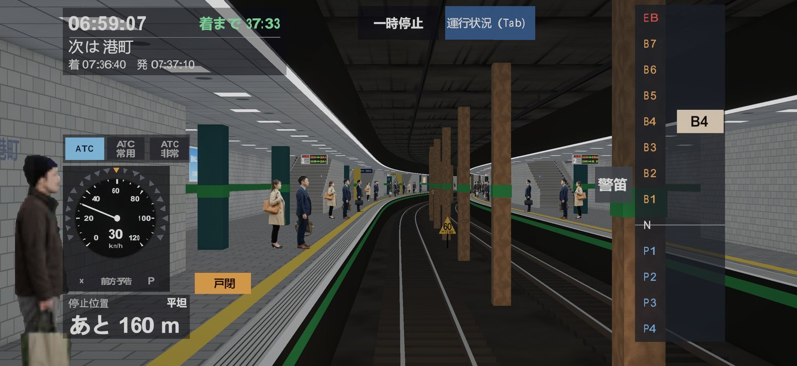

電車運転ゲーム東湾線・地下鉄わかば線編
その時、
運転士は
どう動くか。
急病人、防護無線、踏切の異常。路線のすべての電車が一つのダイヤで走る中で起きる出来事に、運転台から対処する電車運転ゲームです。
- 無料のシナリオ 2本
- 有料版 980円
- iPhone・Android
近日公開 ただいまストアの審査中です

急病人、防護無線、踏切の異常。路線のすべての電車が一つのダイヤで走る中で起きる出来事に、運転台から対処する電車運転ゲームです。
近日公開 ただいまストアの審査中です

出来事に向き合う
シナリオの途中で、突然それは起きます。指令の列車無線を聞き、信号と表示器を確かめて、その場で判断します。
前や後ろの電車で急病人。駅で何分も止まり、ダイヤが乱れはじめる。
警報が鳴ったら、すぐに非常ブレーキ。指令の無線を待って再開する。
特殊信号発光機が一瞬だけ光る。見逃さずに止まれるか。
発車した直後に車掌弁で止まる。出発合図のブザーを待って発車する。
ダイヤが乱れたら
路線を走る電車は、あなたの電車だけではありません。前も後ろも向かいの線も、一つのダイヤで動いています。出来事で1本が止まれば、遅れは後ろへ伝わります。指令は路線全体を見て、駅で電車を止める「抑止」や、発車を少し遅らせて間隔をそろえる「運転間隔の調整」をかけ、お客さまへの影響を広げないようにします。
時間を止めて、路線の全部の電車の位置と遅れ、信号と開通している進路が見えます。抑止や調整がかかった電車も、ひと目でわかります。

抑止や調整がかかると、駅の運行指示器に出ます。指令の無線を聞き、出た時刻まで発車を待って、前後の電車との間隔を整えます。

リアルな運転風景
朝・昼・夕方・夜で景色が変わります。夕方は日が沈む街を、夜は窓の灯りと駅の蛍光灯の中を、前照灯で線路を照らして走ります。

地上の区間は ATS-P、地下鉄は ATC。実物を参考にした保安装置が、速度を見張っています。パターンに近づけば知らせが出て、越えればブレーキがかかります。

右のレバーを指で動かして、力行とブレーキを操ります。駅に着いたら、ドアを開け、発車メロディーを自分で鳴らし、ドアを閉めて発車。車掌の放送と駅の放送も流れます。



無料で遊べるシナリオ
シナリオは、決められた時刻の電車に乗り、決められた駅まで運転します。
電車が10分おきの、落ち着いた昼の時間。地上から地下鉄へ走り、途中で保安装置が ATS-P から ATC に替わります。
窓の灯りがともる夜、踏切の続く区間を走ります。特殊信号発光機が光ったら、すぐに非常ブレーキ。
「すべてのシナリオ」を購入すると、有料のシナリオ17本（合わせて約15時間30分）が遊べます。朝のラッシュの抑止・運転間隔の調整、防護無線、踏切、ドアの挟まり、車庫の出入り、全線（30駅・約48km）を朝・昼・夕方・夜に通して走るシナリオまで。
遊びかた
時間帯と区間、路線図を見て、運転する電車を選びます。
ドアを閉め、信号を確かめて、レバーで力行。次の駅を目指します。
無線が入り、ダイヤが乱れます。信号と表示器に従い、間隔を整えて走ります。
停車位置・停車の衝動・安全運転の3つを、それぞれ S〜C で。
料金
アプリは無料です。無料のシナリオ2本を遊んで、気に入ったら「すべてのシナリオ」を。月額の支払いはありません。
0円
980円（税込・買い切り）
よくある質問
必要ありません。インストールしてすぐに始められます。氏名やメールアドレスはお預かりしません。
かかりません。「すべてのシナリオ」は一度だけ支払う買い切りです。自動で更新されることはありません。
新しい端末で、同じ Apple ID または Google アカウントでアプリを入れ、設定の画面の「購入を復元」を押すと戻せます。iPhone と Android のあいだでは引き継げません。
iOS 15.0 以降の iPhone と、Android 8.0 以降のスマートフォンです。3D の景色を描くため、新しめの端末をおすすめします。
いいえ。路線・駅・会社・電車は、すべてこのゲームのために作った架空のものです。実在の鉄道会社とは関係ありません。
遊べます。購入と「購入を復元」のときだけ、インターネットにつながっている必要があります。
本作に登場する路線・駅・会社・列車は、すべて架空のものです。実在の鉄道会社・団体とは一切関係がありません。画面はすべて開発中のもので、内容は変更になる場合があります。
アプリは無料。登録なしで、すぐに無料のシナリオを運転できます。
近日公開 ただいまストアの審査中です